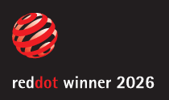

Red Dot Winner 2026Firepulse
Real heat. Real weight. Real pressure — the fireground inside any building, without the danger.
Firepulse
Firepulse combines mixed reality with real firefighting gear to deliver a safe, immersive training experience. Training inside actual buildings, firefighters face the authentic physical and mental stress of fireground operations — through thermal feedback, weight simulation and motion tracking.

In-headset UI — step inside the visor
The real designed screens, made interactive — run the full operator flow yourself by clicking the highlighted controls, exactly as a trainee sees it in the visor.


Raise the hose to extinguish the fire ahead!


Firefighter training is essential for high-risk response — yet real-environment, live-fire training is costly, hard to scale, and lacks safe, repeatable, effective methodology.

Training is already one of the largest sources of firefighter injury — and most of those injuries are physical strain, the very load a screen-only simulator can’t deliver.
of training injuries are strains, sprains & muscular pain — physical load, not technique.
VR-only systems can't simulate the sensory load of a real fire — temperature, weight, physical pressure. The result is inadequate training that risks injury and resists accurate assessment.

Live-fire drills expose trainees to burns, smoke inhalation and collapse hazards.
Outcomes are judged by eye on paper — subjective, inconsistent and hard to compare.
Pure VR misses heat, load and pressure — the body never learns the real stress.
higher risk of sudden cardiac death during fire suppression than routine duty — the danger is physiological, not just the flames.
Source: Kales et al., New England Journal of Medicine (2007)of annual duty time is real fire suppression — yet it triggers most line-of-duty deaths. The decisive moments are too rare to stage and measure on demand.
Source: NIOSH; peer-reviewed fire-service researchof firefighter cardiac fatalities trace to stress & overexertion — the physical load a screen-only simulator can never put on the body.
Source: CDC / NIOSHLeveraging physical feedback and data-driven assessment, the system delivers immersive training in real buildings without live fire. Rather than replicating the fire itself, it simulates the physical and psychological stress the fire provokes.

A head-to-hand kit: a mixed-reality headset, a sensor-laden training suit with power pack, and a real water hose — every piece tuned to recreate the load of the fireground.


MR Headset
A mixed-reality overlay for immersive, scenario-accurate visual feedback. The visor renders fire, smoke and the tactical HUD directly onto the real space the trainee is standing in.


Training Suit
The suit provides thermal feedback and tracks movement. A multi-layer build delivers controlled heat where the scenario calls for it, without burning.

- 01PU wear-resistant layer
- 02Insulation layer
- 03Heating wire
- 04Heat-spreader layer
- 05Comfort layer

Power Pack
The backpack unit supplies power to the suit and headset — and replicates the weight of a real breathing apparatus, so the trainee's body carries the same load as the fireground.


Water Hose
A real water hose retains authentic pressure and handling, while a smart module tracks nozzle direction and usage — feeding the system's accuracy and efficiency scoring.
Four stages take a trainee from briefing to after-action report — fully repeatable, fully measured.
Don the gear & sync to missions
Firefighters put on the integrated MR system while instructors sync mission-specific tasks to each trainee. After selecting the teaching mode, trainees preview the fire location and operation map before entry.
Dynamic scene overlay
On entering the training area, the system overlays a dynamic fire scenario onto the physical space — generated from the building's structural blueprint. Drag the divider to see the same room transform.


Live operational drills
Trainees perform drills with haptic feedback in realistic firefighting operations. The HUD tracks vitals, heading and trajectory, and live task progress — the operable system is rebuilt below.
Mission complete & assessed
When the primary fire source is extinguished, the drill resolves to Mission Success and the system finalizes logging — handing off to the data-driven after-action report.
Complete the training and obtain the analysis report. Every action is scored, compared to the trainee's own history, and ranked against the squad.
Actions performed accurately, reactions quick, high fire-extinguishing success rate.